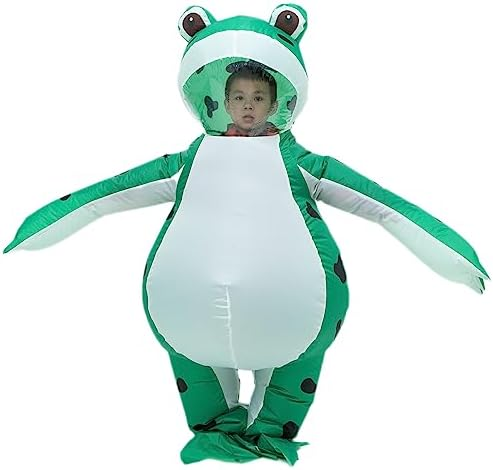

O Petshop de Sapos é o lugar perfeito para cuidar e mimar seu sapo de estimação. Nossa equipe de especialistas em anfíbios está pronta para atender às necessidades do seu amigo verde. Nos últimos anos, temos testemunhado um aumento na conscientização sobre a importância do bem-estar e da saúde mental não apenas para seres humanos, mas também para nossos amigos de quatro patas, ou neste caso, amigos de quatro patas e caudas viscosas - os sapos. À medida que as pessoas buscam novas maneiras de garantir que seus sapos de estimação vivam vidas felizes e saudáveis, surgiu uma tendência empolgante: os pet shops especializados em massagem tântrica para sapos. Esses estabelecimentos exclusivos estão redefinindo o cuidado dos sapos, oferecendo tratamentos holísticos e terapêuticos que não apenas cuidam do corpo, mas também da mente e da alma dos anfíbios. No entanto, a saúde mental e a higiene não podem ser negligenciadas nesse contexto. Saúde Mental para Sapos Os sapos têm necessidades emocionais e mentais que são muitas vezes subestimadas. Ao fornecer massagem tântrica e outros tratamentos terapêuticos, os pet shops especializados têm a oportunidade de criar um ambiente que promova a tranquilidade e o relaxamento para esses animais únicos. Isso não só pode melhorar sua qualidade de vida, mas também reduzir o estresse e a ansiedade. Além disso, é essencial observar o comportamento de um sapo e garantir que eles estejam confortáveis durante os tratamentos. Os massagistas especializados devem ser treinados para entender os sinais de desconforto e ajustar a terapia de acordo. Higiene Adequada A higiene é crucial para qualquer pet shop, independentemente dos serviços oferecidos. Sapos são animais sensíveis à qualidade da água e ao ambiente em que vivem. Portanto, em pet shops especializados, a higiene é ainda mais vital. Os tanques ou áreas onde os sapos são tratados devem ser mantidos impecavelmente limpos. Além disso, os terapeutas que lidam com os sapos devem seguir procedimentos rigorosos de lavagem das mãos e esterilização de equipamentos. Isso evita a transmissão de doenças e garante que os sapos não sejam expostos a agentes patogênicos. Em resumo, os pet shops especializados em massagem tântrica para sapos oferecem uma abordagem inovadora para o cuidado de animais de estimação. No entanto, a saúde mental e a higiene devem ser prioridades essenciais. Ao fazê-lo, garantimos que nossos amigos de pele escamosa e língua pegajosa desfrutem de uma vida longa e feliz, em harmonia com o universo.
Endereço: Rua dos Sapos, 123
Telefone: (69) 0420-3155
Email: contato@petshopsapos.com